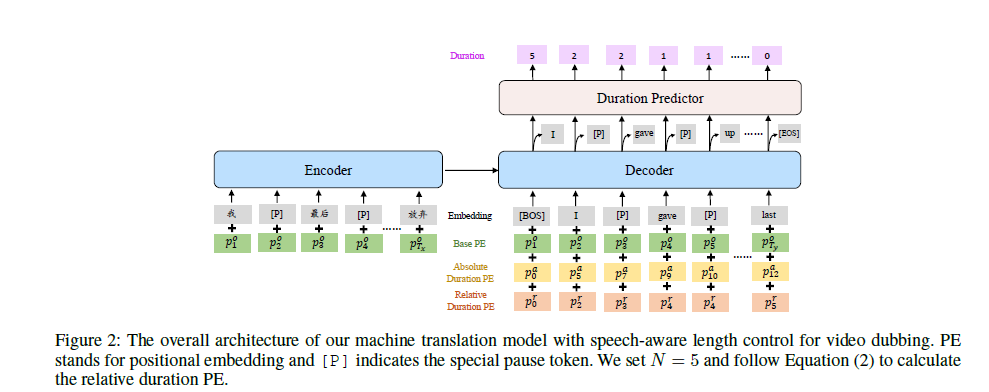
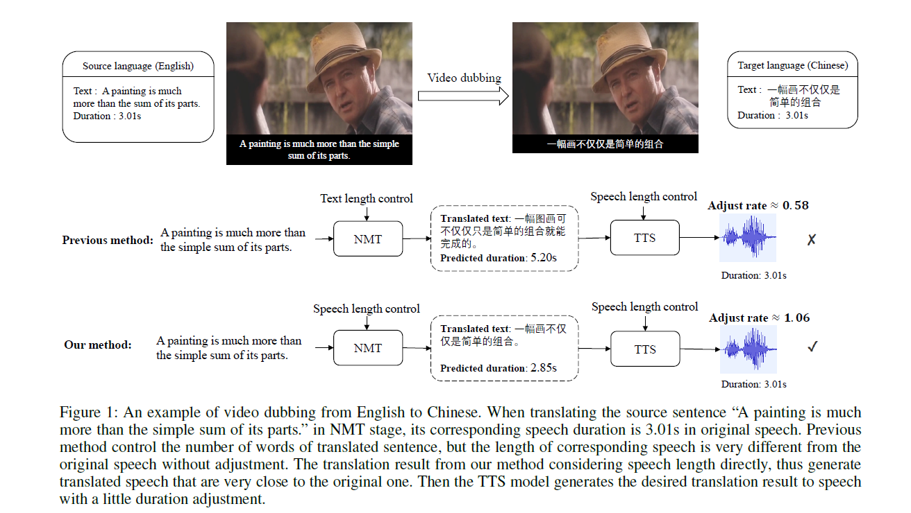
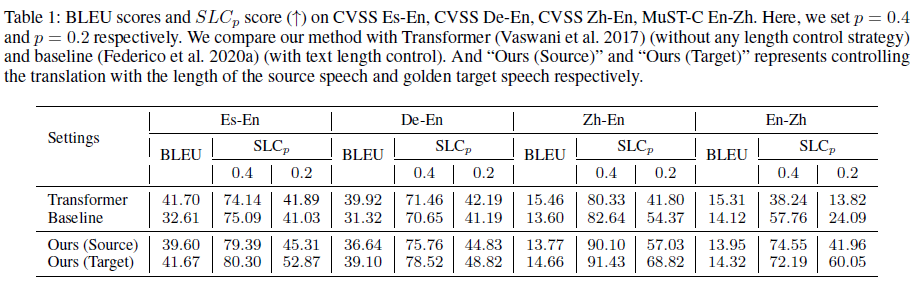
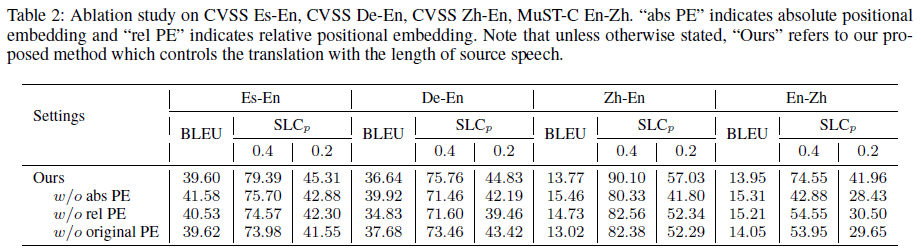

Machine Translation with Speech-Aware Length Control for Video Dubbing
Authors
- Yihan Wu (Gaoling School of Artificial Intelligence, Renmin University of China) yihanwu@ruc.edu.cn
- Junliang Guo (Microsoft Research Asia) junliangguo@microsoft.com
- Xu Tan (Microsoft Research Asia) xuta@microsoft.com
- Chen Zhang (Microsoft Azure Speech) zhangche@microsoft.com
- Bohan Li (Microsoft Azure Speech) bohli@microsoft.com
- Ruihua Song (Gaoling School of Artificial Intelligence, Renmin University of China) rsong@ruc.edu.cn
- Lei He (Microsoft Azure Speech) helei@microsoft.com
- Sheng Zhao (Microsoft Azure Speech) szhao@microsoft.com
- Arul Menezes (Microsoft Azure Translation) arulm@microsoft.com
- Jiang Bian (Microsoft Research) jiang.bian@microsoft.com
Abstract
Video dubbing aims to translate the original speech in a film or television program into the speech in a target language, which can be achieved with a cascaded system consisting of speech recognition, machine translation and speech synthesis. To ensure the translated speech to be well aligned with the corresponding video, the length/duration of the translated speech should be as close as possible to that of the original speech, which requires strict length control. Previous works usually control the number of words or characters generated by the machine translation model to be similar to the source sentence, without considering the isochronicity of speech as the speech duration of words/characters in different languages varies. In this paper, we propose a machine translation system tailored for the task of video dubbing, which directly considers the speech duration of each token in translation, to match the length of source and target speech. Specifically, we control the speech length of generated sentence by guiding the prediction of each word with the duration information, including the speech duration of itself as well as how much duration is left for the remaining words. We design experiments on four language directions (German→English, Spanish→English, Chinese↔English), and the results show that the proposed method achieves better length control ability on the generated speech than baseline methods. To make up the lack of real-world datasets, we also construct a real-world test set collected from films to provide comprehensive evaluations on the video dubbing task.
Model Architecture
Task Overview

Demo Video (translate from Chinese to English)
The below video is used to show the comparison of our method with other baseline methods.
Demo Video (translate from English to Chinese)
The below video is used to show the comparison of our method with other baseline methods.
Demo Video (compared with other methods)
The below video is used to show the comparison of our method with other baseline methods.
Real-World Video Dubbing Test Set
Considering the scarcity of real-world video dubbing dataset (i.e., motion pictures with golden cross-lingual source and target speech), we construct a test set collected from dubbed films to provide comprehensive evaluations of video dubbing systems.
Specifically, we select nine popular films translated from English to Chinese, which are of high manual translation and dubbing quality, and contain rich genres such as love, action, scientific fiction, etc. We cut 42 conversation clips from them with the following criteria: 1) The clip duration is around 1 ∼ 3 minutes. 2) More than 10 sentences are involved in each clip, which contains both long and short sentences. 3) The face of speaker is visible mostly during his or her talks, especially visible lips at the end of speech.
Please follow here for more information about Real-World Video Dubbing Test Set.
Experiment Results
1. Automatic Evaluation
We show the machine translation quality and the length control performance of related models on four language directions in Table 1. Besides, we also list the results when controlling the translation with the length of the golden target speech, to show the upper-bound performance of our model. 2. Ablation Study
To verify the effectiveness of the proposed duration-aware positional embedding, we conduct ablation studies on three kinds of PEs on four language directions, as shown in Table 2. We can find that the absolute and relative duration PE are both crucial to achieve better speech-aware length control results.
3. Results on Real-world Test Set
To compare the performance of related methods on the realworld video dubbing scenario, we conduct experiments on the real-world test set constructed by us. Results are shown in Table 3.
We conduct subjective evaluation to evaluate the translation quality, the synchronization with the original film footage, and the overall quality of the synthesized speech. We hired 8 judges who are good at both Chinese and English, asking them to rate the samples generated from different method on the 5 scale.

Our Related Works
AdaSpeech: Adaptive Text to Speech for Custom Voice
AdaSpeech 2: Adaptive Text to Speech with Untranscribed Data
AdaSpeech 3: Adaptive Text to Speech for Spontaneous Style
AdaSpeech 4: Adaptive Text to Speech in Zero-Shot Scenarios
FastSpeech: Fast, Robust and Controllable Text to Speech
FastSpeech 2: Fast and High-Quality End-to-End Text to Speech
MultiSpeech: Multi-Speaker Text to Speech with Transformer
LRSpeech: Extremely Low-Resource Speech Synthesis and Recognition